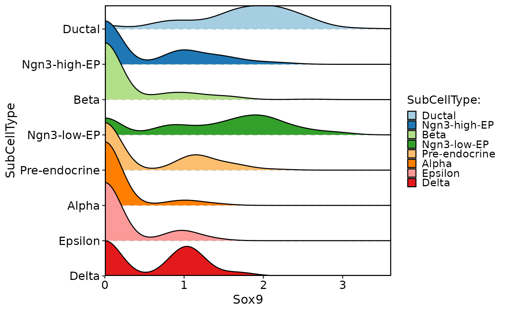
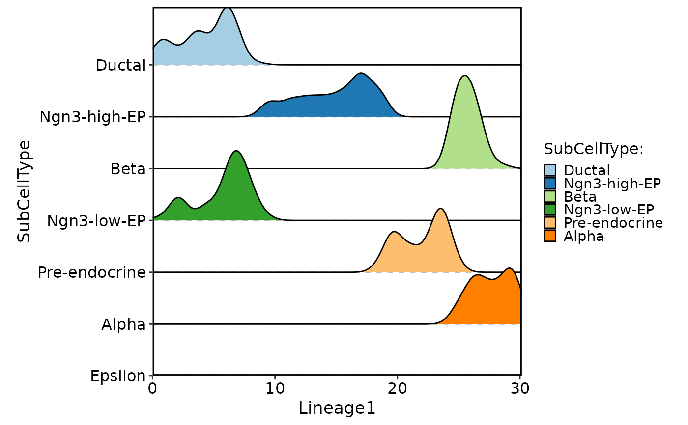
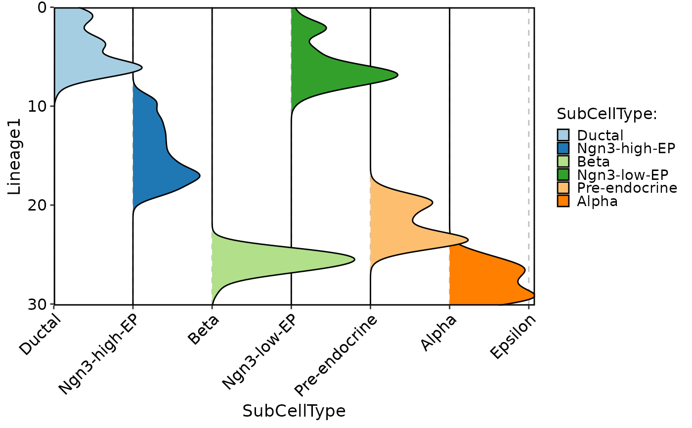
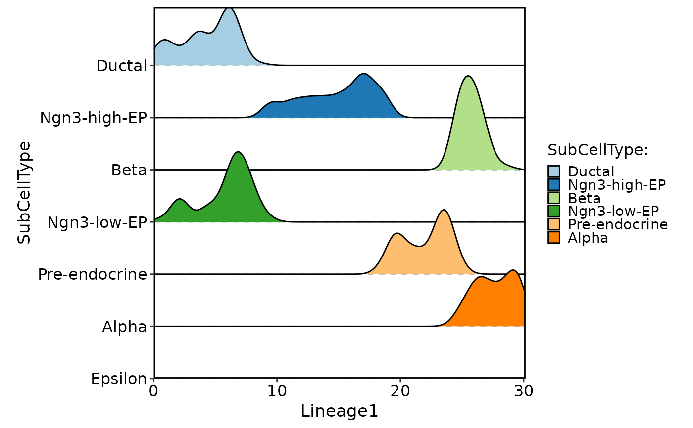
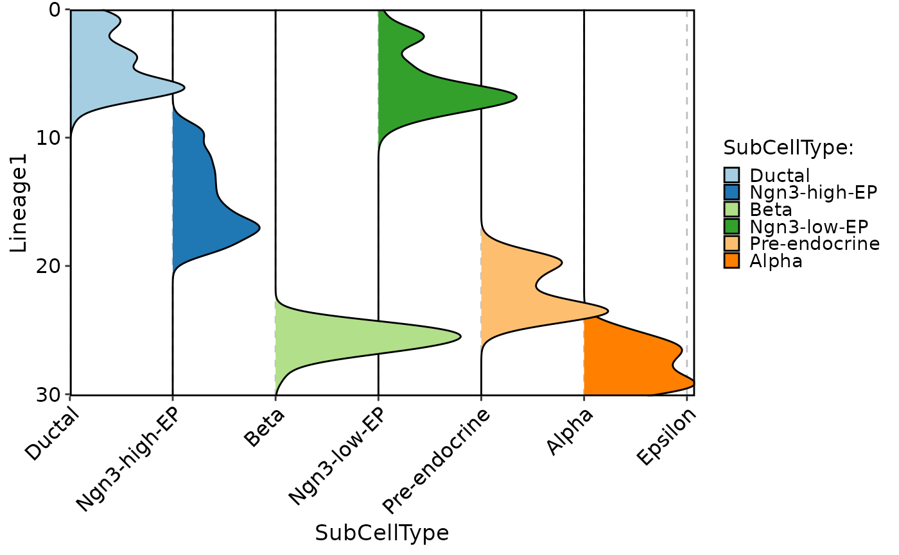

Plots the density of specified features in a single or multiple groups, grouped by specified variables.
Usage
CellDensityPlot(
srt,
features,
group.by = NULL,
split.by = NULL,
assay = NULL,
layer = "data",
flip = FALSE,
reverse = FALSE,
x_order = c("value", "rank"),
decreasing = NULL,
palette = "Paired",
palcolor = NULL,
cells = NULL,
keep_empty = FALSE,
y.nbreaks = 4,
y.min = NULL,
y.max = NULL,
same.y.lims = FALSE,
aspect.ratio = NULL,
title = NULL,
subtitle = NULL,
legend.position = "right",
legend.direction = "vertical",
theme_use = "theme_scop",
theme_args = list(),
combine = TRUE,
nrow = NULL,
ncol = NULL,
byrow = TRUE,
force = FALSE
)Arguments
- srt
A Seurat object.
- features
A character vector of features to use.
- group.by
Name of one or more meta.data columns to group (color) cells by.
- split.by
Name of a column in meta.data column to split plot by. Default is
NULL.- assay
Which assay to use. If
NULL, the default assay of the Seurat object will be used.- layer
Which layer to use. Default is
data.- flip
Whether to flip the x-axis. Default is
FALSE.- reverse
Whether to reverse the y-axis. Default is
FALSE.- x_order
A character specifying how to order the x-axis. Can be
"value"or"rank". Default is"value".- decreasing
Whether to order the groups in decreasing order. Default is
NULL.- palette
Color palette name. Available palettes can be found in thisplot::show_palettes. Default is
"Paired".- palcolor
Custom colors used to create a color palette. Default is
NULL.- cells
A character vector of cell names to use. Default is
NULL, which means all cells are included.- keep_empty
Whether to keep empty groups. Default is
FALSE.- y.nbreaks
A number of breaks on the y-axis. Default is
4.- y.min
A numeric specifying the minimum value on the y-axis. Default is
NULL, which means the minimum value will be automatically determined.- y.max
A numeric specifying the maximum value on the y-axis. Default is
NULL, which means the maximum value will be automatically determined.- same.y.lims
Whether to use the same y-axis limits for all plots. Default is
FALSE.- aspect.ratio
Aspect ratio of the panel. Default is
NULL.- title
The text for the title. Default is
NULL.- subtitle
The text for the subtitle for the plot which will be displayed below the title. Default is
NULL.- legend.position
The position of legends, one of
"none","left","right","bottom","top". Default is"right".- legend.direction
The direction of the legend in the plot. Can be one of
"vertical"or"horizontal".- theme_use
Theme used. Can be a character string or a theme function. Default is
"theme_scop".- theme_args
Other arguments passed to the
theme_use. Default islist().- combine
Combine plots into a single
patchworkobject. IfFALSE, return a list of ggplot objects.- nrow
Number of rows in the combined plot. Default is
NULL, which means determined automatically based on the number of plots.- ncol
Number of columns in the combined plot. Default is
NULL, which means determined automatically based on the number of plots.- byrow
Whether to arrange the plots by row in the combined plot. Default is
TRUE.- force
Whether to continue plotting if there are more than 50 features. Default is
FALSE.
Examples
data(pancreas_sub)
pancreas_sub <- standard_scop(pancreas_sub)
#> ℹ [2026-01-22 03:08:49] Start standard scop workflow...
#> ℹ [2026-01-22 03:08:50] Checking a list of <Seurat>...
#> ! [2026-01-22 03:08:50] Data 1/1 of the `srt_list` is "unknown"
#> ℹ [2026-01-22 03:08:50] Perform `NormalizeData()` with `normalization.method = 'LogNormalize'` on the data 1/1 of the `srt_list`...
#> ℹ [2026-01-22 03:08:51] Perform `Seurat::FindVariableFeatures()` on the data 1/1 of the `srt_list`...
#> ℹ [2026-01-22 03:08:52] Use the separate HVF from srt_list
#> ℹ [2026-01-22 03:08:52] Number of available HVF: 2000
#> ℹ [2026-01-22 03:08:52] Finished check
#> ℹ [2026-01-22 03:08:52] Perform `Seurat::ScaleData()`
#> ℹ [2026-01-22 03:08:53] Perform pca linear dimension reduction
#> ℹ [2026-01-22 03:08:53] Perform `Seurat::FindClusters()` with `cluster_algorithm = 'louvain'` and `cluster_resolution = 0.6`
#> ℹ [2026-01-22 03:08:54] Reorder clusters...
#> ℹ [2026-01-22 03:08:54] Perform umap nonlinear dimension reduction
#> ℹ [2026-01-22 03:08:54] Non-linear dimensionality reduction (umap) using (Standardpca) dims (1-50) as input
#> ℹ [2026-01-22 03:08:56] Non-linear dimensionality reduction (umap) using (Standardpca) dims (1-50) as input
#> ✔ [2026-01-22 03:08:58] Run scop standard workflow completed
CellDensityPlot(
pancreas_sub,
features = "Sox9",
group.by = "SubCellType"
)
#> Picking joint bandwidth of 0.209

pancreas_sub <- RunSlingshot(
pancreas_sub,
group.by = "SubCellType",
reduction = "UMAP"
)
#> Warning: No shared levels found between `names(values)` of the manual scale and the
#> data's fill values.
#> Warning: No shared levels found between `names(values)` of the manual scale and the
#> data's fill values.
#> Warning: Removed 3 rows containing missing values or values outside the scale range
#> (`geom_path()`).
#> Warning: Removed 3 rows containing missing values or values outside the scale range
#> (`geom_path()`).
 CellDensityPlot(
pancreas_sub,
features = "Lineage1",
group.by = "SubCellType",
aspect.ratio = 1
)
#> Picking joint bandwidth of 0.548

CellDensityPlot(
pancreas_sub,
features = "Lineage1",
group.by = "SubCellType",
flip = TRUE
)
#> Picking joint bandwidth of 0.548

CellDensityPlot(
pancreas_sub,
features = "Lineage1",
group.by = "SubCellType",
aspect.ratio = 1
)
#> Picking joint bandwidth of 0.548

CellDensityPlot(
pancreas_sub,
features = "Lineage1",
group.by = "SubCellType",
flip = TRUE
)
#> Picking joint bandwidth of 0.548
